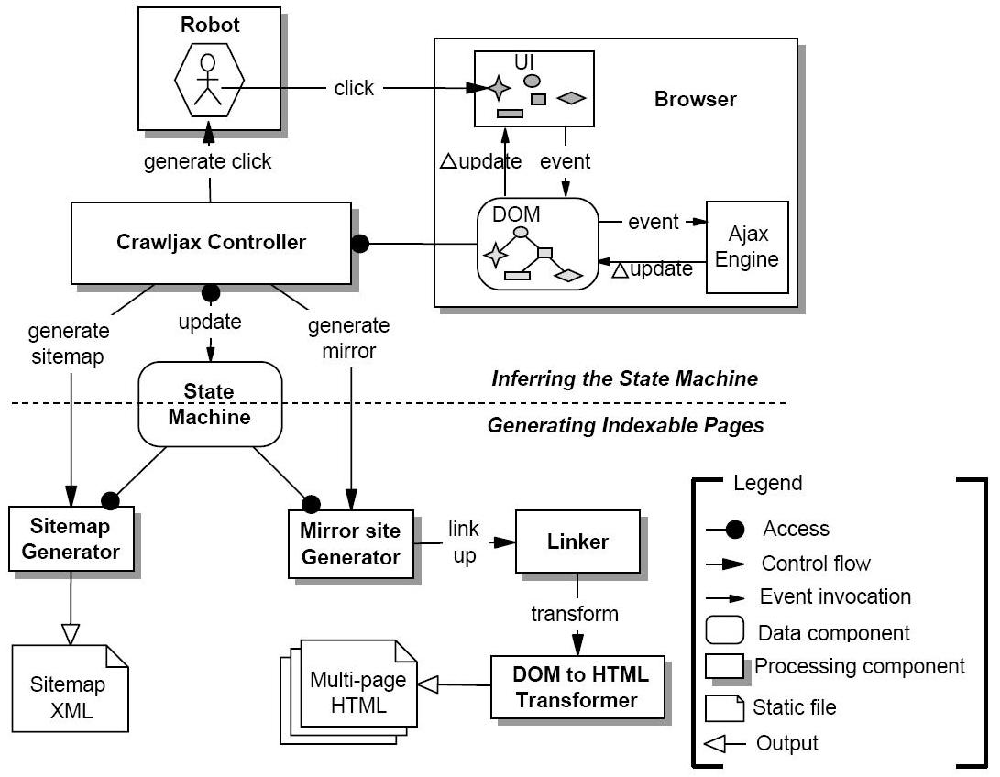
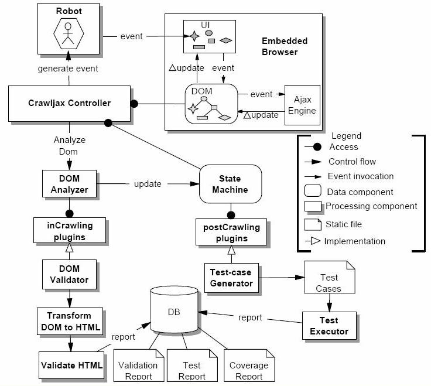

SpiderAjax webUI Alpha
Normally, crawlers, even as sophisticated as Google search bots, cannot crawl and index a dynamic website [lots of AJAX calls, javascript]. This is not feasible, even advised against for security reasons [they don't want to load possible malicious javascript on their servers :P].
In order to make AJAX testing (crawling) more generalized and accurate, a team of researchers published a paper and published an open-source tool, Crawljax based on it.
I will give you a brief understanding of how this tool works:
-
div and span elements in AJAX applications might have clickables attached to them.
-
The URL of the website along with prospective click elements (a set of HTML tags) is input.
-
Robot is used to simulate real user clicks on the embedded browser to fire possible events and actions attached to candidate clickables.
-
A state flow graph is then built.
-
The new state flow graph becomes the input for the crawl procedure which is recursively called.
-
The distance between the current DOM and previous DOM is compared.
-
The state flow graph is updated accordingly.
-
The links in the nodes of the graphs are established by replacing the clickable with a hypertext link.
-
HTML String representation of all DOM objects are generated.
-
The original Ajax site is then used as a mirror site to check for vulnerabilities,
A state-flow graph for an AJAX site A is a 3 tuple < r, V , E > where:
-
r is the root node (called Index) representing the initial state after A has been fully loaded into the browser.
-
V is a set of vertices representing the states. Each
v ∈ Vrepresents a run-time state in A. -
E is a set of edges between vertices. Each
( v 1 , v 2 ) ∈ Erepresents a clickable c connecting two states if and only if state v 2 is reached by executing c in state v 1 .

It illustrates how from the start page three different states can be reached. The edges between states are labeled with an identification (either via its ID-attribute or via an XPath expression) of the element to be clicked in order to reach the given state.

A working model for Crawljax can be shown as,
